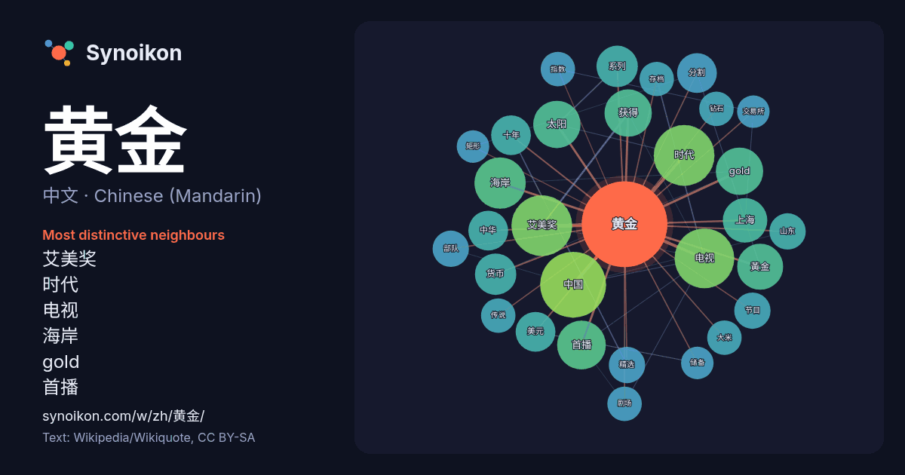

中文 · Chinese (Mandarin) · word of the day list
黄金
“gold” · The words found around it in 790 instances from Chinese (Mandarin) Wikipedia, Wikiquote.

Most distinctive neighbours
- 艾美奖 29×
- 时代 24×
- 电视 19×
- 海岸 18×
- gold 18×
- 首播 17×
- 太阳 16×
- 黃金 15×
- 货币 13×
- 分割 12×
- 精选 11×
- 十年 11×
- 上海 10.0×
- 中国 10.0×
- 存档 9.9×
- 大米 9.9×
- 中华 9.8×
- 钻石 9.8×
- 剧场 9.7×
- 指数 9.6×
× = how many times more often than in general Chinese (Mandarin) Wikipedia text.
Most frequent neighbours
- 中国 33
- 时代 28
- 艾美奖 28
- 电视 27
- 海岸 20
- 首播 18
- gold 17
- 太阳 17
- 获得 17
- 黃金 16
- 上海 15
- 系列 13
- 货币 13
- 中华 12
- 分割 12
- 十年 12
- 美元 12
- 人民 11
- 位于 11
- 国家 11
In context
- 中国的黄金周指中华人民共和国的春节和国庆节两个法定节日因调休形成的长假期，由法定假日、原有的週末加上调整邻近的週末（先休假后补假，或先补假后休假）而成，由1999年的国庆节假期（“十一”黄金周）开始实施至今。因连休带来巨大的假日经济效益，被称为“黄金周”。 因为国庆节和中秋节叠合，两节连假长达8天， Wikipedia snippets · 黃金週 (中國)
- 黃金比例（英語：golden ratio），又稱黃金比、黄金分割比、黄金分割率，是數學常數，一般以希臘字母 φ {\displaystyle \varphi } （phi）表示。可以以下代數式定義： a + b a = a b = def φ ( a > b > 0 ) {\displaystyle Wikipedia snippets · 黄金分割率
- 《JoJo的奇妙冒險第五部黃金之風》（日語：ジョジョの奇妙な冒険Parte5黄金の風）為日本漫畫家荒木飛呂彥所著的日本漫畫《JoJo的奇妙冒險》的第五部，自1995年起至1999年止在《週刊少年Jump》連載，收錄於單行本47集至63集之中。本作在2001年、2011年分別推出一部外傳小說，並在2 Wikipedia snippets · 黃金之風
- 黃金聖鬥士，是日本漫画及动画《聖鬥士星矢》中的人物，為守護女神雅典娜最高级的聖鬥士，負責守護聖域十三宫。黄金聖鬥士身穿堪稱最強聖衣的黄金聖衣。聖域十三宫以及黄金聖衣命名是来自希臘星座黄道十二宫的典故以及參考最新天文學發現列入蛇夫宮，在设定上和海皇波赛顿的七海將軍、冥王黑帝斯的冥界三巨頭同等級，因為每 Wikipedia snippets · 黄金圣斗士
- 黄金氏族”（即“黄金血脉”），包括成吉思汗在内的历代蒙古可汗的传记也被称为“黄金记录”。例如，在1607年成书的韵文体编年史《俺答汗传》中，记载着“天之骄子成吉思汗的黄金氏族”、“博尔济吉特的黄金後代”等；17世纪初又有《黄金史》等多部蒙古文著作问世。在蒙古族文化传统之中，黄金家族也就成为成吉思汗家族的同义词。 Wikipedia snippets · 黃金家族
- 黄金時段艾美獎、8次衛星獎、2次金球獎、2次皮博迪獎、2次評論家選擇電影獎和4次電視評論家協會獎（英语：TCA Awards）。其中主演布萊恩·克蘭斯頓（飾演男主角華特·懷特）蟬聯4次黃金時段艾美獎最佳男主角獎，亞倫·保爾（飾演男配角傑西·平克曼）蟬聯3次黃金 Wikipedia snippets · 絕命毒師
- 《满城尽带黄金甲》（英语译名：Curse of the Golden Flower）是一部张艺谋导演的中国历史古装电影，程小東和李才任動作設計，2006年11月12日在洛杉矶举行全球首映，同年12月14日全球同步公映。此片耗资4,500万美元，该片被美国《时代周刊》评选为2006年度十佳电影之一。 Wikipedia snippets · 满城尽带黄金甲
- 中国黄金集团有限公司（简称中国黄金）是一家综合性大型矿业公司，于2003年成立。主要业务为地质勘探、矿山开采、选矿冶炼、产品精炼、加工销售、科研开发和工程设计与建设。前身为1979年成立的中国黄金总公司（即国家黄金管理局，实行一个机构两块牌子管理）。目前，中国黄金控制黄金 Wikipedia snippets · 中国黄金集团
More Chinese (Mandarin) words
Precomputed on 2026-10-09 with default settings (±5 words, medium corpus). The interactive map can refresh it with live data.